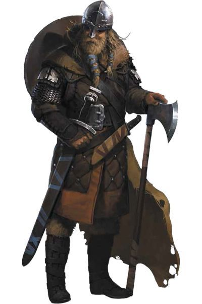

ESTAS SÃO AS HISTÓRIAS DE UM POVO INCANSÁVEL QUE,
há muito tempo, saiu aos mares e rios em longos navios,
primeiro para saquear e aterrorizar, em seguida para colonizar.
No entanto, havia uma energia, um amor pela aventura, que foi cantado em cada página.
Noite adentro Liriel leu, iluminada pela luz de velas após velas. Ela nunca tinha dado muita atenção para os humanos,
mas essas histórias à fascinavam. Naquelas páginas amareladas estavam os contos de heróis corajosos, animais estranhos e ferozes,
primitivos deuses poderosos e uma magia que era parte e dava forma àquela terra distante. – Elaine Cunningham, Filha dos Drow
Nos confins da maioria dos mundos, os humanos são a mais jovem das raças comuns, chegando mais tarde no cenário mundial e com uma vida curta,
se comparados aos anões, elfos e dragões. Talvez seja por causa de suas vidas mais curtas que eles se esforcem para alcançar o máximo que
podem nos anos que têm. Ou talvez eles sintam que têm algo a provar às raças mais antigas, e é por esta razão que eles constroem seus poderosos
impérios através da conquista e do comércio. O que quer que os motive, os humanos são os inovadores, os realizadores e os pioneiros dos mundos.
UM AMPLO ESPECTRO
Com sua propensão para a migração e conquista, os humanos são fisicamente mais diversificados que as outras raças comuns.
Não há um humano típico. Um indivíduo pode ter entre 1,65 metro a 1,90 metro de altura e pesar entre 62,5 kg e 125 kg. Os tons de pele
podem variar do negro ao muito pálido, e os cabelos podem ir do negro ao loiro (encaracolado, crespo ou liso).
Homens podem possuir pelos faciais esparsos ou abundantes. A diversidade dos humanos pode ter uma pitada de sangue não humano,
revelando indícios de elfos, orcs ou outras linhagens. Os humanos chegam à idade adulta no fim da adolescência e raramente vivem um século.
VARIADOS EM TUDO
Os humanos são os mais adaptáveis, flexíveis e ambiciosos entre todas as raças comuns. Eles têm amplos e distintos gostos,
moralidades e hábitos nas muitas diferentes regiões onde eles se instalaram. Quando se estabelecem em um lugar, eles permanecem:
eles constroem cidades que duram por eras, e grandes reinos que podem persistir por longos séculos.
Um único humano pode ter uma vida relativamente curta, mas uma nação ou cultura humana preserva tradições com origens muito
além do alcance da memória de qualquer um dos humanos. Eles vivem plenamente o presente – tornandoos bem adaptados a uma vida de aventuras
– mas também planejam o futuro, esforçando-se para deixar um legado duradouro. Individualmente e como grupo, os humanos são oportunistas
adaptáveis, e permanecem alerta às dinâmicas mudanças políticas e sociais.
INSTITUIÇÕES DURADOURAS
Onde um único elfo ou anão pode assumir a responsabilidade de proteger um local especial ou um poderoso segredo,
os humanos fundam ordens sagradas e instituições para tais fins. Enquanto clãs anões e anciões halflings passam as antigas tradições
para cada nova geração, os templos, governos, bibliotecas, e códigos de lei dos humanos fixam suas tradições no alicerce da história.
Os humanos sonham com a imortalidade, mas (exceto aqueles poucos que procuram a não-vida ou a ascensão divina para escapar das garras da morte)
somente alcançam-na certificando-se que serão lembrados depois que partirem. Embora alguns humanos possam ser xenófobos, em geral suas sociedades
são inclusivas. As terras humanas dão as boas-vindas a um grande número de raças não humanas em comparação com a proporção de humanos que
vivem em terras não humanas.
EXEMPLO DE AMBIÇÃO
Os humanos que buscam aventura são os mais ousados e ambiciosos membros de uma ousada e ambiciosa raça.
Eles buscam ganhar glória aos olhos de seus companheiros ao acumular poder, riqueza e fama. Mais do que as outras raças,
os humanos defendem causas, em vez de territórios ou grupos.